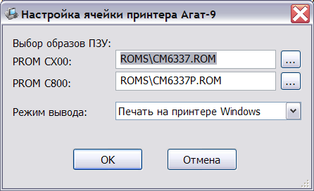

![Ячейка принтера Apple ][](ru/prnaconf.png)
Эмулятор включает в свой состав поддержку двух типов интерфейса принтера: ячейки принтера Centronics для компьютера Apple ][ и ячейки принтера для Агат-9. Оба модуля содержат встроенную поддержку эмуляции принтера Epson FX-85 для расширенной обработки выводимой информации.
Эти ячейки незначительно отличаются в составе настроек (т.к. ячейка для Агат-9 содержит расширенное ПЗУ объёмом 2Кбайта):

Основная настройка модуля принтера заключается в указании режима вывода данных. Поддерживаются следующие режимы:
Активизация модуля производится автоматически в поддерживающих его программах (например, Агат-Автор), либо вручную командой PR#n, где n - номер слота.
При запуске печати открывается окно выбора файла (тип файла выбирается в зависимости от настроек модуля):

По умолчанию файлы печати размещаются в подкаталоге print каталога эмулятора.
Если в окне выбора печати нажать "Отмена", вывод данных будет временно отключен, до завершения текущего сеанса печати.
После завершения вывода данных на принтер из эмулируемой системы, необходимо выбрать пункт "Закончить печать" контекстного меню системы. Это позволит завершить формирование текущего выходного файла и организовать последующий вывод в новые файлы.
См. также: Изменение конфигурации, Описание и настройка устройств, Поддерживаемое оборудование, Главное меню